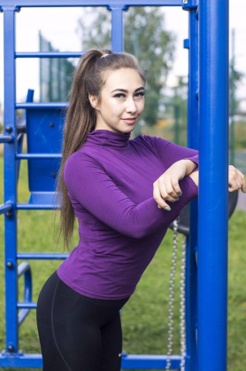

Изосимова Ольга Сергеевна
Учитель физкультуры
Об авторе

Ольга Сергеевна является активным участником спортивных мероприятий и соревнований, где она представляет свою школу и помогает своим ученикам достигать лучших результатов. Она всегда готова поделиться своими знаниями и опытом с другими учителями и тренерами.
Новости
ГТО